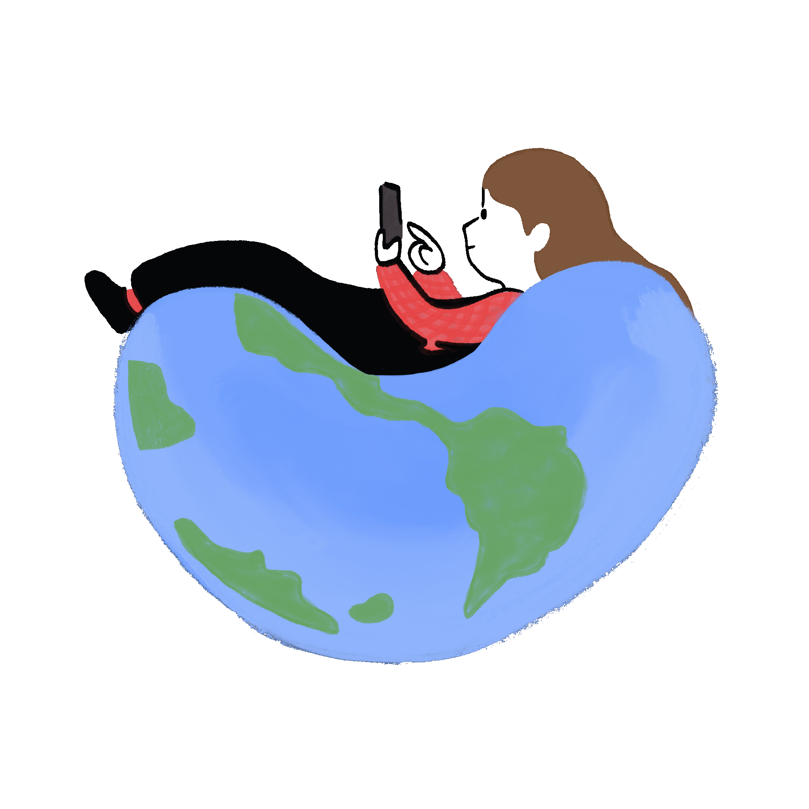

I'm a Computer Science and UX/UI student at the University of San Francisco with a passion for creative,
human-centered design.
This site is a window into how I actually live digitally (the apps I rely on, the ones I love, and
the ones I probably spend too much time on).
Welcome to The Feed, a place that captures my digital life. 📸
I use this to get up in the morning. I have a few set earlier than I need to wake up because I like to click snooze over and over. After a few snoozes, I finally get up!
I loveeeee listening to music. I pretty much always have a pair of headphones on whether it be my Sony WH-1000XM5s or my Airpods. My go-to lately has been shuffling my favorites or using my Winter 2025 playlist.
I enjoy doing mundane tasks while listening to podcasts! In the morning I like to put on a podcast and reach the flow state while getting ready. I have also been loving the Ride podcast. Mary Beth Barone and Benito Skinner are soooo funny.
Anytime I am struggling creatively, I use Pinterest. I like using it for picking out an outfit, finding new recipes, drawings etc. I also tend to go on Pinterest to scroll and look at pretty images. It helps me find the things I like through an algorithm catered to my taste and preferences!
I love taking photos to capture moments or important info! Here I am taking a photo of my roommates's dog Appa. He is really cute.
Facebook marketplace is one of my favorite apps to scroll and look for new things to buy. Not only is it cost effective and good for the environment, but I can also easily doomscroll and see all of the cool, niche items people in San Francisco/Bay Area are selling! (Tooth cookie jar is definitely new to me).
When I'm not texting and updating my friends 24/7, I'm calling or facetiming them. I enjoy taking a break from studying to update them on my life while doing something else productive like cleaning or making dinner. I usually call my mom, my sister, or my boyfriend. Here I'm calling my boyfriend while I clean my room!
Notion is my favorite everyday app used for organizing and managing my tasks. I use it to plan out my week and help me manage my time and various responsibilities.
I enjoy doom scrolling on Instagram. It is my main social media platform (I try to keep it to a minimum lol). I use it to send funny reels to my friends and boyfriend + I enjoy seeing what people are up to, even that one friend from middle school who I still follow!
I like to scroll through this and go through my memories and reminisce. I'm constantly nostalgic, even for yesterday. Like I said previously, I'm always having my phone out to take a photo/video, especially when I'm with my loved ones. Here are some photos of my favorite memories that I hand picked from my favorites album on my phone.
As someone who is glued to their phone 24/7 (I have to use it for everything now, don't blame me) I enjoy using Opal. It blocks my most distracting and least productive apps and when I need to use those apps, I have to set a timer to be able to access it. Here I am scrolling through my focus report! (I was on track to spend 33 years on my phone, how sad).
I unfortunately use Gmail a lot. I have to constantly check my email and make sure I've answered all direct emails and I'm up to date with important info! 🙈
I have been using the Transit app quite a lot, especially since one of my classmates told me that Transit Royale is free for students! It shows me live updates on all buses including how packed the bus is, if there are any delays, how clean it is, etc. I love using this to get around the city.
As someone who is trying to expand their food palate and try more new restaurants in a city known for having the greatest food in the country, I enjoy using Yelp as I like to eat with my eyes first before I spend any money.
